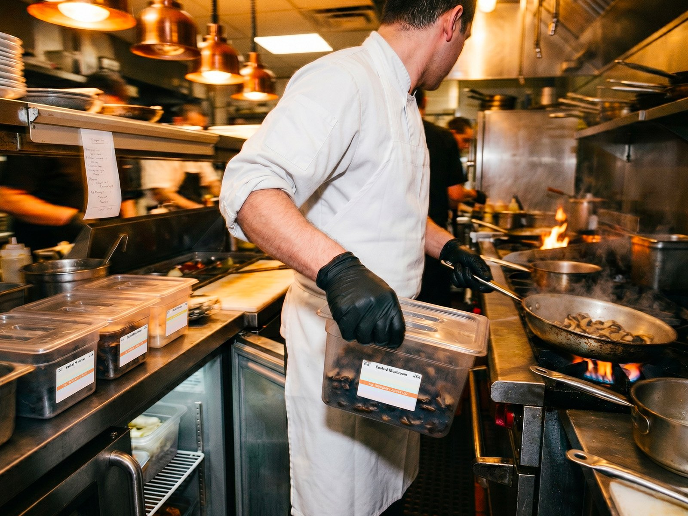
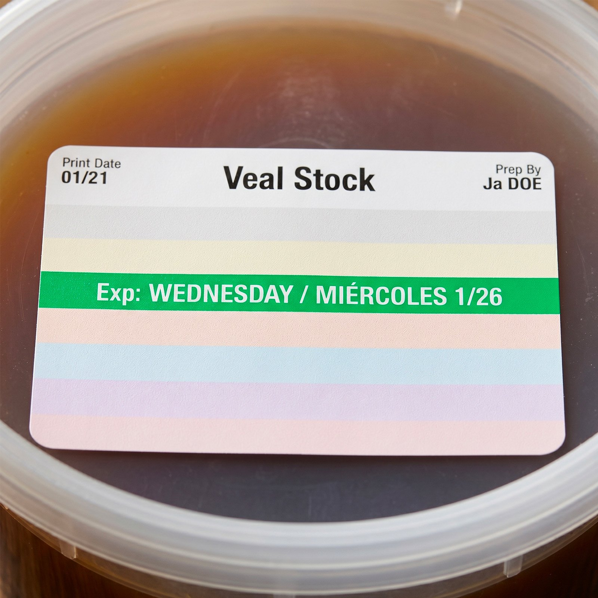

Standardized Food Safety Labels
One readable structure for item, prep, and discard cues—so training scales and audits are easier to interpret.
FreshDot helps restaurant teams label food faster, improve compliance, and strengthen FIFO with a standardized, color-coded labeling system built for real kitchen operations.

In fine dining and scratch kitchens, staff are moving fast, prepping constantly, and managing high-value ingredients across multiple stations. That is when handwritten labels get skipped, dating becomes inconsistent, and FIFO starts relying on memory instead of a clear system.
Your labeling process should help your team work faster and more consistently—not create another step they avoid when the kitchen gets busy.
FreshDot makes labeling easier to do correctly, easier to read, and easier to follow across prep, storage, line stations, and walk-ins.

A food label should do more than mark a container. It should help your team identify product quickly, understand priority instantly, and make the right use-first decision without slowing down service.
FreshDot is designed to improve the three areas that matter most:
The result is a cleaner labeling process, clearer product visibility, and less avoidable waste caused by unclear dating or poor rotation.
One readable structure for item, prep, and discard cues—so training scales and audits are easier to interpret.
Visual priority that works at arm’s length in low light and high noise—when seconds matter.
Designed for gloves, rush periods, and handoffs between prep and line cooks.
Deploy the same standard across locations so leadership sees one system, not twelve variations.
FreshDot combines durable food-safety labels, a standardized label format, and color-coded visual logic into one practical system designed for busy kitchens.

Make the compliant path the convenient path.
Help teams see priority, not guess it.
Support better rotation with clearer signals.
One standard across stations and locations.
Less second-guessing, fewer interruptions.
A phased rollout that respects kitchen calendars and leadership bandwidth.
The best way to evaluate a labeling system is to see how it performs in real operations. That is why we offer no-charge trials for qualified restaurant groups.
Straight answers for operations and food safety leaders.
FreshDot is an operational system—not only a roll of labels. The format, color logic, and rollout guidance are designed together so teams adopt a consistent standard that supports compliance and FIFO visibility, not just a sticker on a container.
FreshDot is built for speed under pressure. The goal is to remove hesitation and rework—fewer label rewrites, fewer “what does this say?” moments, and faster shelf scans—so the net effect is smoother execution during service.
Yes. Multi-unit operations are a core use case. A shared labeling standard reduces drift between locations, simplifies training, and gives leadership a clearer picture of execution during visits and reviews.
Color extends readability when time is short and handwriting varies. Used sparingly and consistently, it helps teams identify priority quickly—supporting FIFO without adding another procedural layer on the line.
We offer no-charge trials for qualified restaurant groups so you can evaluate fit in real conditions. Start a conversation on our contact page and we’ll outline eligibility and next steps.